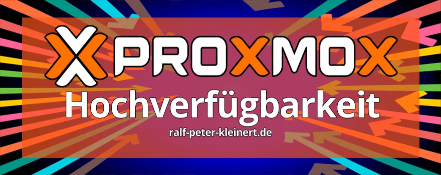
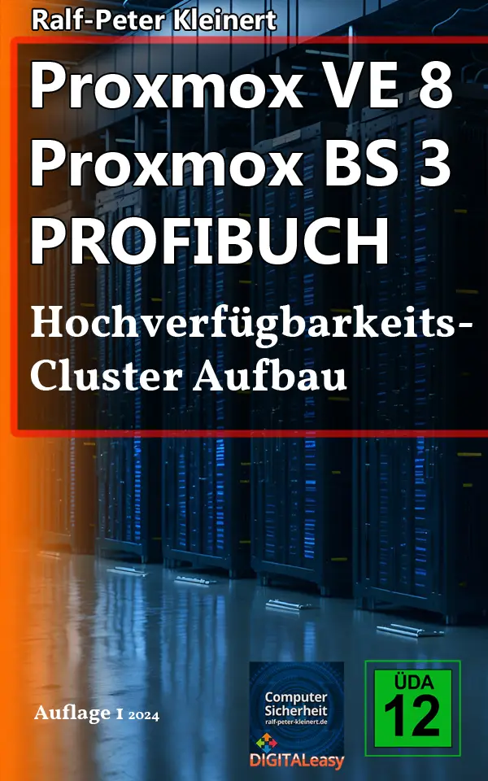

Cluster insbesondere Proxmox-Cluster sind Systeme, die für Unternehmen deutlich interessanter sind, als für Privatanwender. Deshalb richtet sich der Artikel auch eher an Unternehmen - was nicht heissen soll, dass man als Privatperson nicht auch so einen Cluster ausbauen kann.
Wenn Unternehmen sich entscheiden, ihre wichtigen Arbeitslasten zu virtualisieren, ist es von größter Bedeutung, dass diese Arbeitslasten stabil und ohne Unterbrechungen laufen, selbst wenn einer der Hosts (Knoten / Node) nicht verfügbar ist. Um das zu erreichen, bieten alle führenden, professionellen Virtualisierungsplattformen die Möglichkeit, virtuelle Maschinen (VMs) und Container (CTs) in einem Cluster hochverfügbar zu machen. Dies bedeutet, dass die VMs und CTs auf verschiedene Hosts im Cluster verteilt werden können, um die Arbeitslast zu übernehmen, falls ein Host ausfällt.
Proxmox ist eine dieser Plattformen und stellt diese Hochverfügbarkeitsfunktion ebenfalls zur Verfügung, sogar in der kostenlosen Version der Software. Diese Fähigkeit macht Proxmox zu einer attraktiven Option für viele Unternehmen, die nach einer kostengünstigen und dennoch leistungsfähigen Lösung suchen.
Für eine erfolgreiche Implementierung dieser Hochverfügbarkeit müssen Sie sicherstellen, dass alle Hosts innerhalb des Clusters Zugriff auf ein gemeinsames Speichergerät haben. Dieser gemeinsame Speicherplatz ist notwendig, damit die VMs und CTs bei einem Host-Ausfall sofort auf einen anderen Host im Cluster verschoben werden können. Durch diesen Zugang zu einem gemeinsamen Speicher wird die Verwaltung der virtuellen Maschinen und Container erheblich vereinfacht und die Systemstabilität erhöht.
Die Verfügbarkeit eines gemeinsamen Speichers bedeutet, dass alle Hosts im Cluster dieselben Datenressourcen nutzen können, was die Datensicherheit und Redundanz ebenso verbessert. Diese gemeinsame Nutzung der Speicherkapazitäten trägt dazu bei, dass geschäftskritische Anwendungen stets zugänglich bleiben und Systemausfälle minimiert werden.
Alles in allem bietet die Einrichtung eines hochverfügbaren Clusters mit Proxmox und einem gemeinsamen Speicher eine robuste und effektive Lösung zur Virtualisierung von Arbeitslasten. Die Konfiguration eines Clusters in Proxmox ermöglicht es Unternehmen, ihre IT-Ressourcen effizienter zu nutzen, die Verfügbarkeit ihrer Dienste zu gewährleisten und gleichzeitig die Betriebskosten niedriger zu halten, als es bei anderen Virtualisierungsystemen aktuell der Fall ist.
Ich möchte noch dazu sagen, dass ein Cluster nach allen Wünschen und Vorstellungen eingerichtet und ausgebaut werden kann. Dieser Artikel bietet lediglich eine Einführung um das System dahinter leichter verstehen zu können.
Achtung
Linux Befehle nicht einfach blind in die Konsole eingeben. Es ist immer zu Prüfen, welche Linux- und Proxmox-Version verwendet werden. Auch ist die Netzwerk-, IP-, Server- und Umgebungskonfiguration ausschlaggebend, ob und wie die hier angegebenen Tipps angewendet werden können. Es sollte sich auch mit jedem Punkt einzeln und intensiv befasst werden. Man kann nicht einfach alles "abarbeiten" und dann läuft es. Proxmox abzusichern braucht Zeit und muss mit äußerster Vorsicht vonstatten gehen. Außerdem ist die Sicherheit von Servern ein dauernder Prozess. Alles einrichten und die Kellertür zuknallen, ist nicht.
DIGITAL-easy Dienstleistungen zu Proxmox VE - PBS - Cluster - Ceph
Meine Proxmox-Serverdienstleistungen habe ich auf einer separaten Website veröffentlicht, da diese Seite hier in erster Linie als Tutorial- und Anleitungsplattform gedacht ist. Dort finden Sie alle Informationen zu meinen Angeboten rund um Proxmox VE, Clusterlösungen, Migrationen und Support. Bitte besuchen Sie: digital-easy.de/dienstleistungen.html
Inhalte des Artikels Proxmox HA Cluster
Proxmox VE 8 Proxmox BS 3 Profibuch zum Clusteraufbau
Ich habe extra für den Aufbau von Clustern ein Buch geschrieben. Hier ist die Installation von 3 Proxmoxservern, die Installation von VMs, CTs und die Erstellung eines Clusters detailliert mit über 130 Screenshots beschrieben. Das sollte noch viel einfacher klappen, wie in diesem Artikel hier beschrieben. Das Buch ist auf Amazon Erhältlich.
Alles in diesem Buch wird über die grafische Benutzeroberfläche (GUI) gelöst, ohne die Shell.
Ich habe zu diesem Buch und zum Aufbau eines Proxmox High-Availability-Clusters ein umfangreiches YouTube-Video-Tutorial erstellt. Das Video und das Buch in Kombination geben Ihnen das nötige Wissen und die erforderlichen Informationen an die Hand, um selbstständig einen Proxmox-Cluster aufzusetzen und zu verstehen, wie Hochverfügbarkeit in einer realistischen Umgebung funktioniert.

Hochverfügbarkeits-Cluster Aufbau
Buch auf AmazonDas E-Book kann über Kindle Unlimited kostenlos geladen und gelesen werden. E-Books erhalten kostenlose Updates,

Ich gehe mit Ihnen jetzt Schritt für Schritt den Prozess, einen Cluster in Proxmox zu erstellen durch.
Schritt 1: Proxmox auf den Knoten / Nodes / Hosts installieren
Installieren Sie zunächst Proxmox auf den Knoten, also den Servern, die zum Cluster hinzugefügt werden sollen. Achten Sie darauf, passende und sinnvolle Namen und IP-Adressen zu vergeben, um die Cluster-Knoten später besser zuordnen zu können.
Ich führe zur Verständnisvermittlung immer gerne mein Beispel an: Firma hat 3 Gebäude, in jedem Gebäude steht ein Server, auf dem Proxmox installiert werden kann. So ist ein späterer Cluster auch vor Ausfall im Wasser- oder Brandschaden geschützt. Server 1 (Knoten 1 / Node 1 / Host 1) steht in Gebäude 1 und die Anderen 2 Server jeweils in Gebäude 2 und 3.
Also könnte man die Knotennamen, Linux Hostname, Proxmox Hostname mit Gebaeude_1, Gebaeude_2 und Gebaeude_3 benennen. Dann wäre eine IP-Aufteilung wie etwa 192.168.1.001, 192.168.1.002 und 192.168.1.003 denkbar um die Zuordnung anhand der Ziffer 1, 2 und 3 zu vereinfachen.
Schritt 2: Proxmox-Cluster einrichten
1. Klicken Sie im Abschnitt „Datacenter“ auf den ersten Knoten und wählen Sie danach „Shell“ aus.
2. Geben Sie den folgenden Befehl ein, um den Cluster zu erstellen:
pvecm create <Name ihres neuen Clusters, zB. firma_xyz_prox-cl_001>
3. Der Vorgang wird in der Regel nur wenige Sekunden dauern. Geben Sie nun folgenden Befehl ein, um den Status des Clusters anzuzeigen:
pvecm status
Schritt 3: Ihre Knoten / Nodes / Hosts zum neuen Cluster hinzufügen
1. Verbinden Sie sich über SSH mit dem nächsten Knoten im Cluster und authentifizieren Sie sich.
2. Fügen Sie den zweiten Knoten zum Cluster hinzu:
pvecm add <IP des Knotens, auf dem der neue Cluster erstellt wurde>
3. Wiederholen Sie diesen Vorgang für alle weiteren Knoten. Der Status der Knoten kann dann im Shell-Fenster des jeweiligen Proxmox-Servers überprüft werden.
Kostenlose IT-Sicherheits-Bücher & Information via Newsletter
Bleiben Sie informiert, wann es meine Bücher kostenlos in einer Aktion gibt: Mit meinem Newsletter erfahren Sie viermal im Jahr von Aktionen auf Amazon und anderen Plattformen, bei denen meine IT-Sicherheits-Bücher gratis erhältlich sind. Sie verpassen keine Gelegenheit und erhalten zusätzlich hilfreiche Tipps zur IT-Sicherheit. Der Newsletter ist kostenlos und unverbindlich – einfach abonnieren und profitieren!
Nachdem Sie alle Knoten dem Cluster hinzugefügt haben, überprüfen Sie den Status des Clusters auf den einzelnen Knoten mit folgendem Befehl:
pvecm status
Weiterführende Informationen zu den einzelnen Knoten finden Sie in der Konsole unter „Membership information“.
In der (GUI), der grafischen Web-Oberfläche von Proxmox wird der neue Cluster ebenfalls angezeigt. Nach der Erstellung erscheint hinter „Datacenter“ der Name des Clusters und darunter sind die verschiedenen Clusterknoten zu finden. Weitere Informationen werden bei „Cluster“ angezeigt, wenn Sie auf „Datacenter <Clustername>“ klicken.
1. Stellen Sie sicher, dass alle Cluster-Knoten auf einen gemeinsamen Datenspeicher zugreifen können, z.B. ein iSCSI-Storage. Sie können aber auch NFS, Ceph oder ZFS und noch andere Speicher verwenden -> Proxmox Storages.
2. Klicken Sie in der Proxmox-Konsole auf „Datacenter“ und wählen Sie „Storage => Add => iSCSI“ aus.
3. Geben Sie die ID an, unter welcher der gemeinsame Datenträger im Cluster erscheinen soll, sowie FQDN oder IP-Adresse des iSCSI-Servers. Das Target wird automatisch ausgefüllt, wenn Proxmox eine Verbindung zum iSCSI-Server herstellt.
4. Klicken Sie auf „Add“, um den gemeinsamen Speicher hinzuzufügen. Stellen Sie sicher, dass in der Spalte „Shared“ der Wert „Yes“ steht, damit alle Cluster-Knoten auf den neuen gemeinsamen Speicher zugreifen können.
1. Erstellen Sie eine HA-Gruppe:
- Klicken Sie auf „Datacenter -> HA -> Groups -> Create“.
- Geben Sie einen Namen für die HA-Gruppe an, z.B. firma_xyz_prox-cl_ha_001 und wählen Sie die Knoten aus, die Bestandteil der Gruppe sein sollen.
2. Erstellen Sie in der Web-Konsole von Proxmox eine neue VM oder einen Container:
- Wählen Sie bei „Disk“ den gemeinsamen Speicher aus.
- Navigieren Sie nach dem Erstellen der VM zu „Datacenter => HA“.
- Klicken Sie auf „Add“ bei „Resources“ und wählen Sie die neu erstellte VM aus.
- Fügen Sie die VM zur HA-Gruppe hinzu und konfigurieren Sie diese als hochverfügbar.
Wenn ein Proxmox-Knoten ausfällt, übernimmt ein anderer Knoten deren Workloads. Auf welchem Knoten die VM aktuell gestartet wurde, sehen Sie im mittleren Bereich oben, wenn Sie diese markieren. Über die Schaltfläche „Migrate“ rechts oben können Sie die VM auf einen anderen Cluster-Knoten verschieben.
Empfohlener Artikel Proxmox Sichern und Härten
Ich habe einen ausführlichen Artikel zum Thema: Proxmox Sichern und Härten geschrieben und denke, dass der eine oder andere Hinweis für Sie interessant sein könnte, wenn Sie sich mit Proxmox-Virtualisierung auseinadersetzen.
Die Erstellung eines neuen Proxmox-Clusters ist recht einfach zu lösen. Installieren Sie den Hypervisor, also Proxmox auf allen Knoten, legen Sie den Cluster an, fügen Sie die Hosts hinzu und verbinden Sie den Cluster mit dem Shared Storage.
Damit eine virtuelle Maschine oder einen Container hochverfügbar werden, erstellen Sie sie nach eine gewöhnliche VM oder Container und wählen dann das Shared Storage als Laufwerk aus. Dann ordnen Sie die VM oder den CT einer HA-Gruppe zu. Danach ist es ein leichtes diese Maschinen über die Konsole jederzeit auf einen anderen Host also Server / Knoten / Node migrieren.
Wenn Sie dazu Fragen haben, können Sie gerne an mein Ende-zu-Ende verschlüsseltes Mailpostfach: ralf-peter-kleinert(at)proton.me Ihre Anfrage stellen. Ich hoffe ich konnte einigen Ihrer Fragen beantworten und wünsche einen schönen Tag.
Ein Proxmox-HA-Cluster ist nichts für Menschen, die mal eben nebenbei „irgendwas“ machen wollen. Dieses Projekt erfordert Zeit, Geduld und ein grundlegendes Verständnis für Server, Virtualisierung und Cluster-Technologien. Wer jedoch einen Hochverfügbarkeits-Cluster aufbauen will, findet hier eine detaillierte Anleitung, die nicht nur die einzelnen Schritte zeigt, sondern auch das Verständnis für die dahinterliegende Technik vermittelt.
Ich habe das gesamte Setup auf einem Hetzner-Server aufgebaut. Auf diesem läuft eine Proxmox Virtual Environment, die als Basis dient. Innerhalb dieser Umgebung werden drei Proxmox-Knoten erstellt. Jeder dieser Knoten erhält eine eigene dedizierte IPv4-Adresse, sodass das Setup einer echten Infrastruktur gleicht. Der Cluster besteht aus den drei Knoten PVE-Germany, PVE-Japan und PVE-USA.
Das Ziel ist es, ein Proxmox-Cluster zu erstellen, der nicht nur die Grundfunktionen bietet, sondern auch Ceph als verteilten Speicher nutzt. Dafür werden in jeden der drei Cluster-Knoten zusätzliche Laufwerke eingebaut. Diese Festplatten werden für Ceph vorbereitet und der Storage-Cluster wird Schritt für Schritt aufgebaut. Dabei geht es nicht nur um die reine Installation, sondern auch um das Verständnis, wie Ceph funktioniert und wie es in die Proxmox-Umgebung integriert wird.
Im nächsten Schritt wird eine virtuelle Maschine mit Debian erstellt. Diese wird auf einem Ceph-Pool installiert und so konfiguriert, dass sie hochverfügbar ist. Der Vorteil einer solchen Lösung liegt darin, dass die VM bei einem Ausfall eines Knotens automatisch auf einem anderen Knoten gestartet werden kann.
In dem Video wird nichts ausgelassen. Jeder Schritt wird ausführlich erklärt, sodass man nicht nur folgen, sondern das Wissen auch auf eigene Projekte übertragen kann. Informatik-Studierende müssen oft viel Geld für vergleichbare Schulungen oder Kurse zahlen. Hier gibt es dieses Wissen in komprimierter Form.
Zum Abschluss wird das HA-Setup getestet. Dazu gehören verschiedene Szenarien, etwa das gezielte Abschalten eines Knotens, um zu prüfen, ob die VM wie vorgesehen migriert wird. Es wird demonstriert, wie sich das Cluster-System verhält, wenn es zu einem Ausfall kommt, und welche Mechanismen greifen, um den Betrieb sicherzustellen.
Dieses Video ist die perfekte Ergänzung zu meinem Cluster-Buch auf Amazon. Wer sich die Zeit nimmt, wird nicht nur lernen, wie man einen HA-Cluster mit Proxmox aufbaut, sondern auch verstehen, wie die einzelnen Komponenten zusammenarbeiten. VMware kann da nicht mithalten.
Über den Autor: Ralf-Peter Kleinert
Über 30 Jahre Erfahrung in der IT legen meinen Fokus auf die Computer- und IT-Sicherheit. Auf meiner Website biete ich detaillierte Informationen zu aktuellen IT-Themen. Mein Ziel ist es, komplexe Konzepte verständlich zu vermitteln und meine Leserinnen und Leser für die Herausforderungen und Lösungen in der IT-Sicherheit zu sensibilisieren.
Aktualisiert: Ralf-Peter Kleinert 17.02.2025